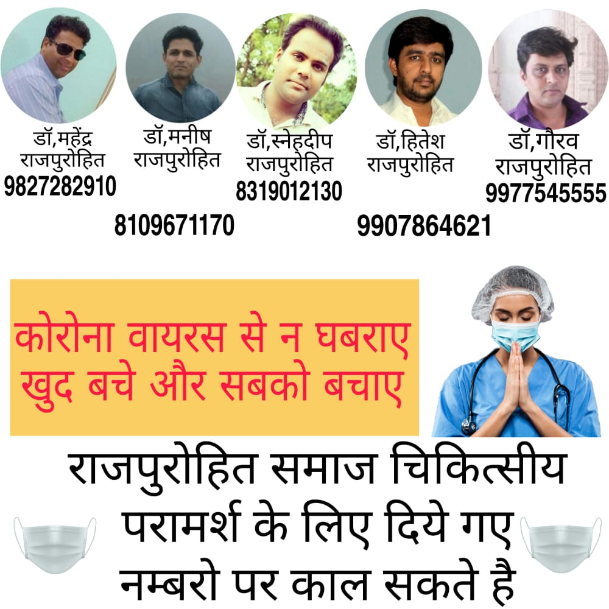

रतलाम राजपुरोहित समाज के समस्त सदस्यो ने कोरोना से जंग जीतने का संकल्प लेते हुए पूर्ण जोश से कदम
बढ़ाया जिसमें कि सर्वप्रथम सामाजिक बंधुओं को कोरोना काल में बिना घर से निकले समाज जन को डिजिटल
पटल पर संगठित किया, इस कार्यक्रम सभी बंधुओं ने अपने सुझाव प्रस्तुत किए अपने अपने सुझाव दिए।
सामाजिक सदस्यों ने समस्त समाज जन को शत-प्रतिशत टीका लगाने का सुझाव दिया । इस पर समर्थन देते
हुए सुरेश चंद्र गोविंद सिंह जी राजपुरोहित रेलवे द्वारा 18 से 45 वाले युवाओं हेतु निजी अस्पताल में वैक्सीनेशन
हेतु लगने वाले शुल्क का सहयोग प्रदान करने का वादा कर सुदृढ कदम बढ़ाया गया ।
राजपुरोहित सामाजिक चिकित्सकों व संगठन द्वारा सहयोग हेतु कदम बढ़ाया गया और समस्त बंधुओं का कोरोना
काल में पूर्ण चिकित्सा देने का कार्यभार संभाला इस कार्य में मुख्य भूमिका में डॉक्टर महेंद्र,
डॉक्टर स्वप्निल, मनीष जी रहे।
सी ए दीपक राजपुरोहित एवं सुरेश गोविंद सिंह राजपुरोहित रेलवे ने सक्रियता दिखलायी और रतलाम में
आइसोलेशन केंद्र की स्थापना की गई जिसमें पुरुष और महिलाओं के अलग-अलग रहने की व्यवस्था की गई।
विनोद राजपुरोहित एवं ईश्वर लाल जी राजपुरोहित के नेतृत्व में आईसोलेशन केंद्र पर चिकित्सक, दवा और
भोजन की सुविधा रखी गई ।
कोरोना काल में आइसोलेशन सुचारू रूप से संचालन हेतु फंड एकत्रित किया गया जिसमें सामाजिक सदस्यों द्वारा
उदारता स्वरूप ऐच्छिक एवं वापसी की राशि देकर सहयोग करने की पहल की गई ।
कोरोना जंग से निपटने के संकल्प को मजबूती प्रदान की गई साथ ही समाज और चिकित्सकों ने सेवाएं प्रदान की ।
सामाजिक सेवा के रूप में ऑक्सीजन की उपलब्धता अनुराग मंडलोई द्वारा कराया गया डॉक्टरों द्वारा प्रतिदिन
प्रातः 2 घंटे योग साधना की क्लास लगाई गई जिसमें सामाजिक सदस्यों ने रूचि दिखाते हुए इस योग शिविर
का लाभ प्राप्त किया ।
आर्थिक सहायता भी समाज जन को किया गया जो पूर्ण गोपनीय है
